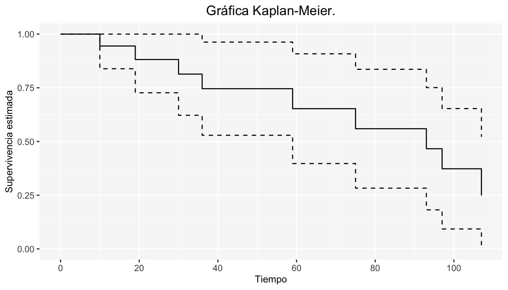
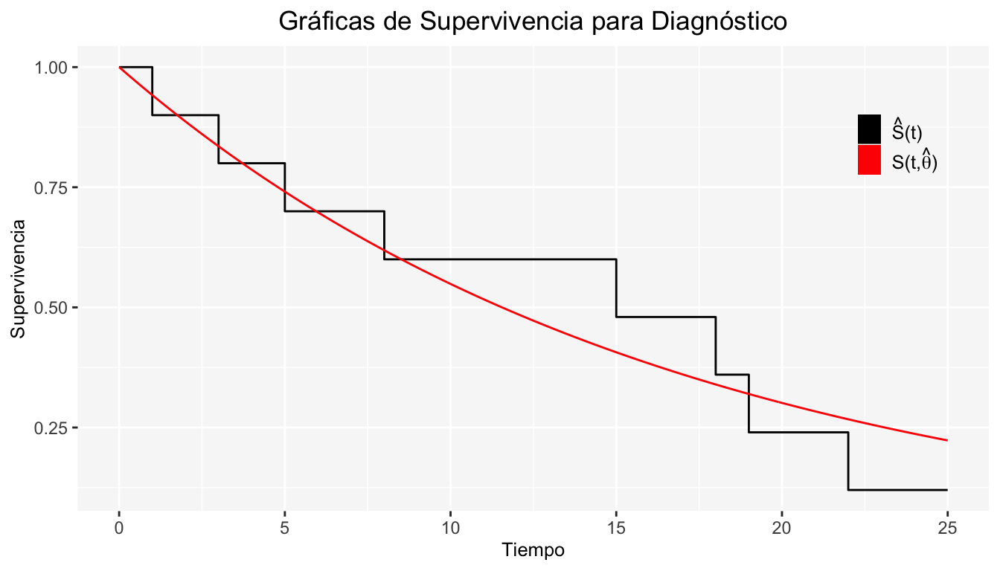
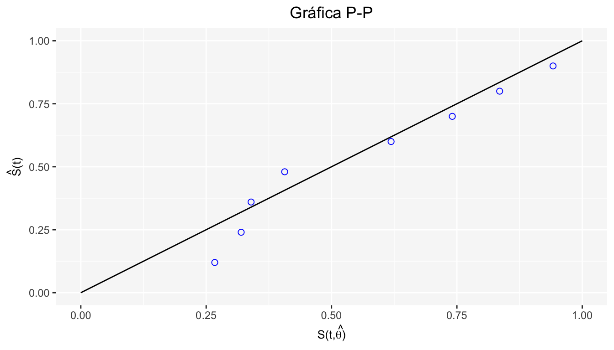
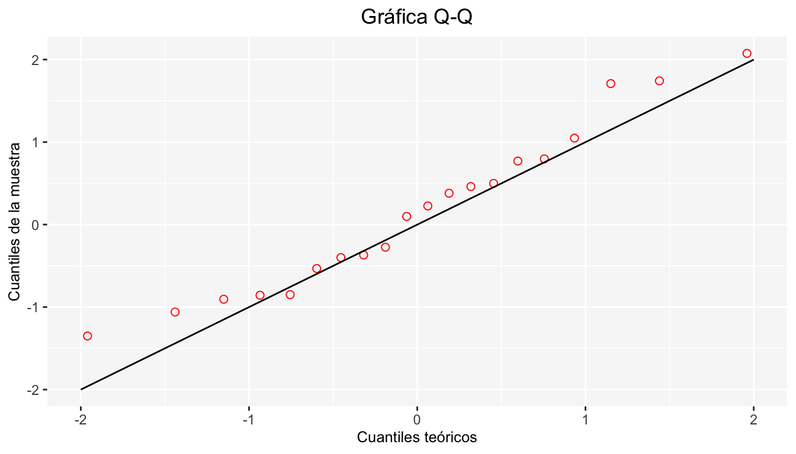

Capítulo 8 Algunas Estimaciones sobre Modelos No Paramétricos
Cuando se emplean los modelos no paramétricos, es necesario hacer inferencia más allá de la estimación puntual. Para tal propósito, conocer la varianza de algunos estimadores de interés, resulta de gran ayuda.
8.1 Estimación de la Varianza para el Estimador de \(S(t)\)
8.1.1 Tabla de Vida
Para la tabla de vida se tienen los siguientes resultados:
\[ \begin{array}{ll} \hat{q_j} = \frac{d_{j}}{n_{j}-\frac{c_{j}}{2}} & \hat{S_{j}}=\prod_{i=1}^{j}\left(1-\frac{d_{i}}{n_{i}-\frac{c_{i}}{2}}\right)\\ \end{array} \]
Entonces un estimador de la varianza para \(\hat{S_j}\) es:
\[ \hat{Var}(\hat{S}_{j}) = \hat{S}_{j}^2\sum_{i = 1}^{j}\frac{\hat{q_i}}{\hat{p_i}(n_{i}-\frac{c_{i}}{2})} \]
Si deseamos obtener intervalos de confianza puntuales para \(S(t)\), podemos partir de la distribución asintótica de \(\hat{S_j}\):
\[ \hat{S}_j \sim N(S_{j}, \hat{Var}(\hat{S_{j}})) \]
De donde, un intervalo de confianza para \(S(t_j)\) al \((1-\alpha)*100\%\) es:
\[ \hat S_j \pm Z_{1-\frac{\alpha}{2}} \sqrt{\hat{Var}(\hat S_j)} \]
8.1.2 Kaplan-Meier
Partiendo de que
\[ \hat{S}(t) = \prod_{k:u_k \leq t}(1-h_{k}) \]
Si aplicamos \(\ln\) tenemos:
\[ \ln(\hat{S(t)}) = \sum_{k:u_k \leq t} \ln(1-h_k) \]
\[ \Longrightarrow Var(\ln(\hat{S}(t))) = \sum_{k:u_k \leq t} Var(\ln(1-h_k)) \]
Desarrollando con series de Taylor (método Delta) se obtiene:
\[ Var(\hat{S}(t)) = \hat{S}^2(t)\sum_{k:u_k \leq t}\frac{Var(\hat{h}_k)}{(1-\hat{h}_{k})^2} \]
Uno de los estimadores más comunes para \(Var(\hat{S}(t))\) es el estimador de Greenwood; éste supone que el número de individuos que sobreviven a lo largo del intervalo que empieza en \(t_j\) tiene una distribución Binomial con parámetros \(n_j\) y \(p_j\) (\(p_j\) es la verdadera probabilidad de supervivencia a lo largo del intervalo). De manera que, el estimador Greenwood es:
\[ \hat{Var}(\hat{S}(t)) \approx \hat{S}^2(t) \sum_{j:t_{j}\leq t}\frac{d_{j}}{n_{j}(n_{j}-d_{j})} \]
El estimador del error estándar será: \(\sqrt{\hat{Var}(\hat{S}(t))}\).
Cuando \(n\rightarrow\infty\), \(\hat{S}(t)\) tiene una distribución normal: \(\hat{S}(t)\sim N(S(t), Var(\hat{S}(t)))\).
El intervalo puntual al \((1-\alpha)*100\%\) de confianza para \(S(t_{0})\) será: \(\hat{S}(t_{0}) \pm Z_{1-\alpha/2} \sqrt{\hat{Var}(\hat{S}(t_0))}\).
Ejercicio
Un estudio consistió en medir el tiempo(en meses) en que los pacientes desarrollaron un cierto tipo de tumor. Los resultados que se obtuvieron fueron:
\[ 10,13^+,18^+,19,23^+,30,36,38^+,54^+,56^+,59,75,93,97,104^+,107,107^+,107^+ \]
La siguiente tabla muestra \(\hat S(t)\) por el método de K-M, además de los intervalos de confianza puntuales utilizando el estimador de Greenwood:
| time | \(d_k\) | \(n_k\) | \(c_k\) | \(S(t)\) | std error | Lower_95% | Upper_95% |
|---|---|---|---|---|---|---|---|
| 10 | 1 | 18 | 0 | 0.9444444 | 0.0539903 | 0.8386254 | 1.0000000 |
| 19 | 1 | 15 | 2 | 0.8814815 | 0.0789892 | 0.7266655 | 1.0000000 |
| 30 | 1 | 13 | 1 | 0.8136752 | 0.0977770 | 0.6220358 | 1.0000000 |
| 36 | 1 | 12 | 0 | 0.7458689 | 0.1106702 | 0.5289593 | 0.9627785 |
| 59 | 1 | 8 | 3 | 0.6526353 | 0.1303197 | 0.3972133 | 0.9080573 |
| 75 | 1 | 7 | 0 | 0.5594017 | 0.1411673 | 0.2827189 | 0.8360845 |
| 93 | 1 | 6 | 0 | 0.4661681 | 0.1451991 | 0.1815830 | 0.7507531 |
| 97 | 1 | 5 | 0 | 0.3729345 | 0.1429930 | 0.0926734 | 0.6531955 |
| 107 | 1 | 3 | 3 | 0.2486230 | 0.1392472 | 0.0000000 | 0.5215425 |
La gráfica correspondiente es:

8.2 Estimadores de la Función de Riesgo Acumulada
Recordemos que:
\[ H(t)=-log(S(t)) \]
Entonces podemos estimar \(H(t)\) de una manera sencilla (\(\hat{S}(t)\) es obtenido por K-M):
\[ \hat{H_1}(t) = -log(\hat{S}(t)) \]
No obstante, una alternativa para conocer \(H(t)\) es utilizar el estimador Nelson-Aalen. Este estimador resulta útil primordialmente en el análisis de datos para la selección entre modelos paramétricos para el tiempo de fallo \(T\), además proporciona un estimador para \(h(t)\). El estimador Nelson-Aalen asume que \(H(t)\) es la suma de riesgos, esto es:
\[ H(t)=\sum_{j:u_{j}\leq t} h_j \]
Entonces el estimador de \(H(t)\) será:
\[ \hat{H_2}(t)=\sum_{j:u_{j}\leq t} \hat h_j=\sum_{j:u_{j}\leq t}\frac{d_j}{n_j} \]
Observe que si tomamos \(\hat H_2(t)\), podemos estimar de otra manera a \(S(t)\). Es decir, \(S(t)\), usando Nelson-Aalen, es:
\[ \hat{S_2}(t) = exp\{-\hat{H_2}(t)\} = exp\left\{-\sum_{j:u_{j}\leq t}\frac{d_j}{n_j}\right\} \]
Un estimador de la varianza de \(\hat{H_2}(t)\) es:
\[ \hat{Var}(\hat{H_2}(t)) = \sum_{j:t_{j}\leq t}\frac{d_j}{n_{j}^{2}} \]
Y el intervalo de confianza puntual al \((1-\alpha)*100\%\) para \({H_2}(t_0)\) es:
\[ \hat{H_2}(t_{0}) \pm Z_{1-\alpha/2} \frac{\sqrt{\hat{Var}\{\hat{H_2}(t)\}}}{\hat{H_2}(t_{0})} \]
Ejemplo
Siguiendo con el ejemplo anterior, que mide el tiempo (en meses) en que los pacientes desarrollaron un cierto tipo de tumor.
La tabla muestra \(\hat S(t)\) por el método de K-M, entonces podemos calcular \(\hat {H}_1(t)=-log(\hat S(t))\). Y por otro lado usar el estimador Nelson-Aalen para obtener \(\hat{H}_2(t)\).
| time | \(d_k\) | \(n_k\) | \(c_k\) | \(S(t)\) | \(H_1(t)\) | \(H_2(t)\) |
|---|---|---|---|---|---|---|
| 10 | 1 | 18 | 0 | 0.9444444 | 0.0571584 | 0.0555556 |
| 19 | 1 | 15 | 2 | 0.8814815 | 0.1261513 | 0.1222222 |
| 30 | 1 | 13 | 1 | 0.8136752 | 0.2061940 | 0.1991453 |
| 36 | 1 | 12 | 0 | 0.7458689 | 0.2932054 | 0.2824786 |
| 59 | 1 | 8 | 3 | 0.6526353 | 0.4267368 | 0.4074786 |
| 75 | 1 | 7 | 0 | 0.5594017 | 0.5808874 | 0.5503358 |
| 93 | 1 | 6 | 0 | 0.4661681 | 0.7632090 | 0.7170024 |
| 97 | 1 | 5 | 0 | 0.3729345 | 0.9863526 | 0.9170024 |
| 107 | 1 | 3 | 3 | 0.2486230 | 1.3918177 | 1.2503358 |
8.3 Estimación Puntual de la Media
Puede ser de interés estudiar algunos parámetros poblacionales que dependen de la función de supervivencia. Por ejemplo: la media, la mediana y cualquier cuantil o percentil.
Hemos visto en la sección 4.1 que:
\[ \mu = \int_{0}^{\infty}S(t)dt \]
Entonces podemos reemplazar \(S(t)\) con el estimador de \(\hat{S}(t)\)(obtenido por K-M), por lo que:
\[ \hat{\mu}=\int_{0}^{\infty}\hat{S}(t)dt \]
Observación: El estimador será apropiado si la observación más grande del conjunto de datos es un tiempo de falla y NO una observación censurada.
Si la última observación(la más grande) es una observación censurada, entonces \(\hat{\mu}\) se calcula como:
\[ \hat{\mu}_{\tau} =\int_{0}^{\tau}\hat{S}(t)dt \]
Donde \(\tau\) es el valor que determina el tiempo más grande al que una persona puede sobrevivir.
Un estimador de la varianza de \(\hat{\mu}_{\tau}\) con \(t_{1}, t_{2},...,t_{k}\) tiempos de fallo observados, es:
\[ \hat{Var}(\hat{\mu_\tau}) = \sum_{i = 1}^{k}\left\{\int_{t_i}^{\tau}\hat{S}(t)dt\right\}^2 \cdot \frac{d_{i}}{n_{i}(n_{i}-d_{i})} \]
El intervalo al \((1-\alpha)100\%\) de confianza para \(\mu_\tau\) es:
\[ \hat\mu_{\tau} \pm Z_{1-\alpha/2}\sqrt{\hat{Var}(\hat\mu_\tau)} \]
NOTA: Es importante que, cuando se esté calculando la media de supervivencia \(\hat\mu_{\tau}\), se verifique que el último valor no sea censurado y se observe en qué intervalo se está calculando la media.
8.4 Estimación de Cuantiles
Recordemos que los cuantiles de orden \(p\), \(t_p\), es el mínimo valor \(t\) tal que \(S(t)\leq 1-p\). Usando el estimador \(\hat{S}(t)\) obtenido por K-M, tenemos:
\[ \hat{t}_p = inf\{t:\hat{S}(t)\leq 1-p\} \]
Por lo que, si deseamos calcular la mediana estimada:
\[ \hat{t}_{0.5} = inf\{t:\hat{S}(t)\leq 0.5\} \]
8.5 Bandas de Confianza para la Función de Supervivencia
Deseamos encontrar dos v.a. \(L(t)\) y \(U(t)\) tales que:
\[ \begin{array}{ll} \mathbb{P}(L(t)\leq S(t)\leq U(t)) = 1-\alpha & \forall t_{L}\leq t\leq t_{U}\\ \end{array} \]
Entonces \([L(t), U(t)]\) serán las bandas al \((1-\alpha)*100\%\) de confianza de \(S(t)\). Puede usted decir ¿cuál es la diferencia entre bandas de confianza e intervalos de confianza puntuales?
Hay dos métodos de aproximación para las bandas de confianza. La primera aproximación fue propuesta por Nair (1984) y esencialmente proporciona límites de confianza que son proporcionales a los intervalos de confianza puntuales, estas bandas son llamadas bandas de probabilidad iguales o bandas EP. Caso contrario, la segunda aproximación, propuesta por Hall y Wellner (1980), establece bandas no proporcionales a los intervalos de confianza puntuales.
Nuestro interés es obtener las bandas de confianza para \(S(t)\); afortunadamente hoy en día se cuenta con software que nos ayuda en dicha tarea, específicamente en R es sencillo obtenerlo.
8.6 Diagnóstico para el Uso de Modelos Paramétricos
Si existe la necesidad de encontrar un modelo paramétrico que ajuste “bien” a los datos, se pueden emplear algunos métodos gráficos que nos den algunos indicios sobre la posible distribución de los datos. Tales indicios pueden ser proporcionados por los métodos no paramétricos.
8.6.1 Gráficas de las Funciones de Supervivencia
Se conoce la función de supervivencia paramétrica \(S(t ;\theta)\) y se tiene un estimador \(\hat \theta\). Si el modelo paramétrico es adecuado entonces \(S(t ;\hat {\theta})\) y \(\hat S(t)\)(estimada por K-M) deben ser similares.
Ejemplo
Se tienen los siguientes tiempos de supervivencia:
\[ 8,5,10^+,1,3,18,22,15,25^+,19 \]
Se desea saber si estos datos ajustan a un modelo exponencial con \(\lambda =0.06\). Realizamos las gráficas de supervivencia:

De acuerdo a la gráfica anterior, ¿Existe algún indicio de que los datos siguen una distribución exponencial con \(\lambda =0.06\)?
8.6.2 Gráfica \(P-P\)
Si el modelo paramétrico es adecuado entonces los puntos:
\[ (S(t_j ;\hat{\theta}),\hat S(t_j)) \]
Deberán caer en la recta identidad (\(\hat S(t_j)\) es estimada por K-M). Es llamada gráfica \(P-P\) pues se gráfica Probabilidad vs Probabilidad.
Ejemplo
Tomando los datos del ejemplo anterior, queremos ver si los datos se distribuyen posiblemente exponencial con \(\lambda =0.06\). Si hacemos la gráfica P-P se tiene:

De acuerdo a la gráfica \(P-P\), ¿Es el modelo exponencial con \(\lambda=0.06\) adecuado a los datos?
8.6.3 Gráfica \(Q-Q\)
La gráfica \(Q-Q\) consiste en graficar diversos cuantiles de los datos vs diversos cuantiles del modelo paramétrico propuesto. Si el modelo teórico propuesto es “adecuado” a los datos entonces la gráfica será cercana a la función identidad.
A continuación se muestra un ejemplo de la gráfica \(Q-Q\):

8.6.4 Linearización de la Función de Supervivencia
Cuando tenemos un modelo paramétrico \(S(t;\theta)\) pero no conocemos \(\hat{\theta}\) podemos hacer linearización de la función de supervivencia. Es decir, si existen \(g_1\) y \(g_2\) tales que \(g_1\{S(t;\theta)\}\) es una función lineal de \(g_2(t)\) entonces podemos graficar \(g_1(\hat{S}(t))\) vs \(g_2(t)\). Y si la familia paramétrica es adecuada, la gráfica se aproxima a una linea recta. Para este método gráfico se utiliza el estimador Nelson-Aalen para \(\hat S(t)\).
Modelo Exponencial
Tenemos que:
\[ S(t)=e^{-\lambda t} \]
\[ \Longrightarrow log\{S(t)\}=-\lambda t \]
De manera que \(g_1=log\{S(t)\}\) y \(g_2=t\). Entonces debemos graficar \(log(\hat S(t))\) vs \(t\), y si los datos se ajustan a un modelo exponencial, dicha gráfica debe ser aproximadamente una linea recta con pendiente \(-\lambda\).
Ejemplo
Consideremos los datos: \(8,5,10^+,1,3,18,22,15,25^+,19\), veamos si se pueden ajustar posiblemente a un modelo exponencial a través de la gráfica de linearización. Entonces tenemos:
¿Qué puede decir a partir de la gráfica anterior?, ¿Puede asumirse que los datos se ajustan a un modelo exponencial?
Modelo Weibull
Para el modelo Weibull tenemos que:
\[ S(t)=e^{-(\lambda t)^{\gamma}} \]
\[ \Longrightarrow -log\{S(t)\}=(\lambda t)^{\gamma} \]
\[ \Longrightarrow log\{-log\{S(t)\}\}=\gamma (log(\lambda)+log(t)) \]
Entonces \(g_1=log\{-log\{S(t)\}\}\) y \(g_2=log(t)\). Por lo que debemos graficar \(log\{-log\{\hat S(t)\}\}\) vs \(log(t)\), y si los datos se ajustan a un modelo Weibull, la gráfica debe ser aproximadamente una linea recta con intercepto \(\gamma log(\lambda)\) y pendiente \(\gamma\).
Modelo Log-Logístico
La función de supervivencia es:
\[ S(t)=(1+\lambda t^{\alpha})^{-1} \]
\[ \Longrightarrow -log\{S(t)\}=log(1+\lambda t^{\alpha}) \]
\[ \Longrightarrow log\{exp\{-log\{S(t)\}\}-1\}=log(\lambda)+\alpha log(t) \]
La gráfica de diagnóstico es: \(log\{exp\{-log\{\hat S(t)\}\}-1\}\) vs \(log(t)\). Si el modelo Log-Logístico es adecuado a los datos, entonces la gráfica es aproximadamente una linea recta con intercepto \(log(\lambda)\) y pendiente \(\alpha\).
Modelo Log-Normal
Para este modelo, la gráfica que debemos emplear para el diagnóstico es \(\Phi^{-1}[1-exp(-log(\hat S(t)))]\) vs \(log(t)\), donde \(\Phi^{-1}\) son los cuantiles de una Normal estándar. Una linea recta(aproximadamente) indica una posible distribución Log-Normal en los datos.
Los métodos gráficos que hemos visto son una herramienta que proporcionan indicios sobre la posible distribución de los datos(si nuestro interés es encontrar un modelo paramétrico). Evidentemente una gráfica no demuestra nada por lo que tendríamos que realizar pruebas formales de bondad de ajuste (pruebas que consideren la censura y/o truncamiento).